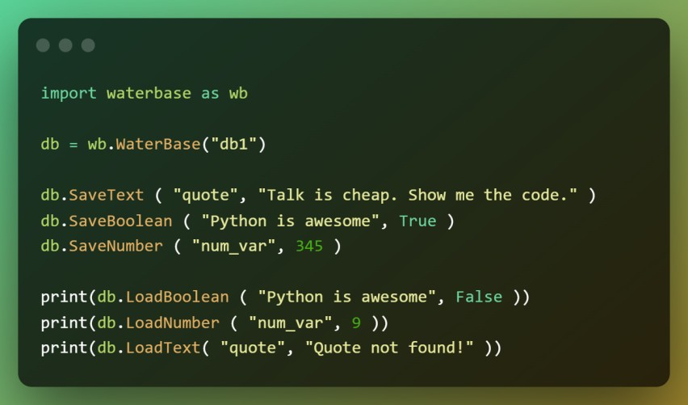
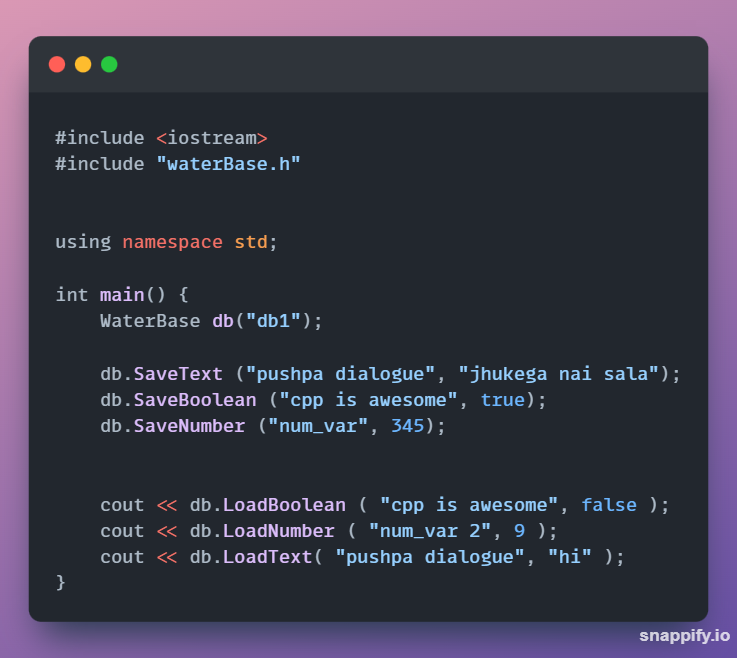

I've always admired Android in the way of storing persistent data. If you are famaliar with Android Development, you'd know about Shared Preferences. If that's new to you, it is basically a storage utility that Android provides using which you can store data in Key-value form. Shared Preferences are suitable in different situations. For example, when the user’s settings need to be saved or to store data that can be used in different activities within the app.
But...we don't get that awesome feature outside the Android environment. Do we? So I decided to create a lightweight storage utility that provides such behavior and can be used on any platform. And voila...WaterBase was born ;)

So first thing's first. Why the name ?
Ok...so here's my explanation. As we all know that 🔥FireBase is a database that is in cloud and can be accessed from anywhere. And so WaterBase is a database on your hard disk that can be accessed from anywhere...just like water🌊...simple and lightweight🪶.
How it's used ?
As promised, in the easisest way...
WaterBase is currently available in C++ and Python
Talk is cheap. Show me the code.
Ok then...here's the Python version
And if you rather prefer C++, you're covered:
Explanation:
First we create an instance of the class WaterBase. We provide the name of the WaterBase database to use as parameter. If no database exists by that name, a new one is created.
Now let's put some values in our database. WaterBase supports three types of values: Boolean, Integer and String. To save values, use the db.Save*(key, value) function.
Now if you want to retreive these values, use db.Load*(key, default_value) function.
That's all...This is the simplest databse you could ever need. You can find the GitHub repository here.
And one last thing...if you've read till here and are still unsure whether should you use WaterBase or not in a project, then please, please, please drop a comment on the repository's issue page, describing why you don't wanna use it. It can help the community to make WaterBase a better product, more suited for you.
Goodbye!!